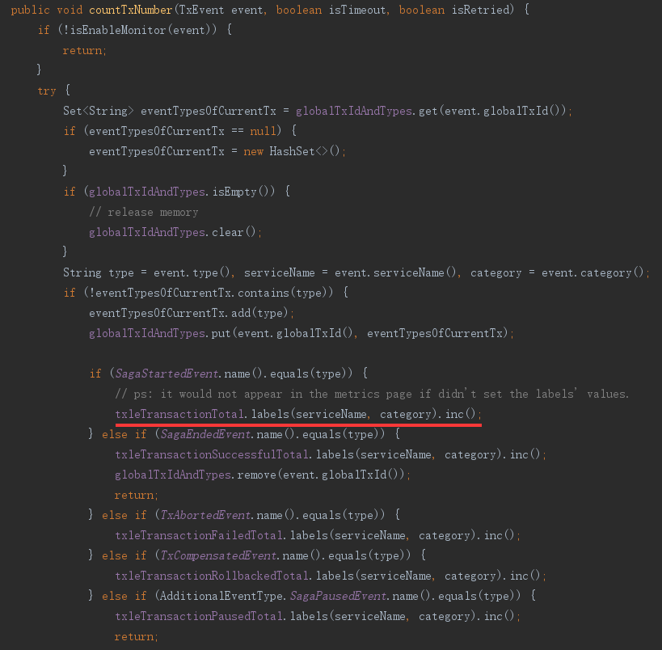
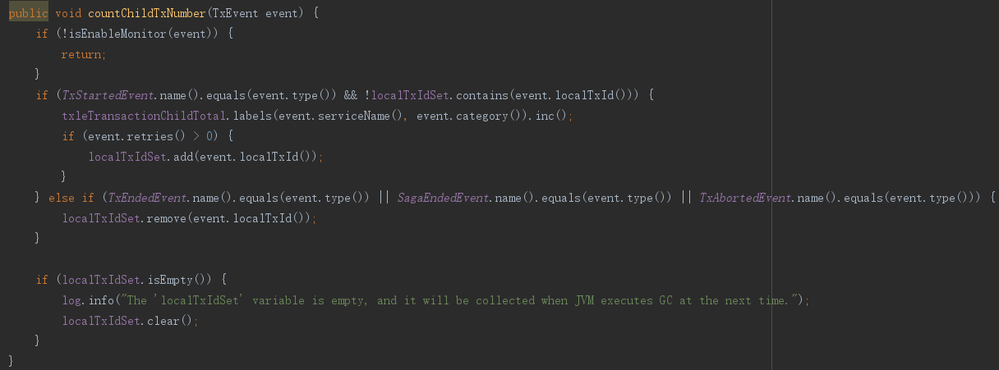
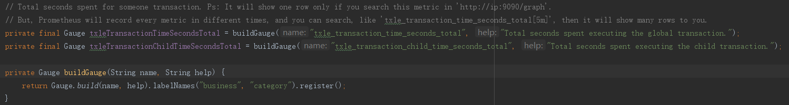
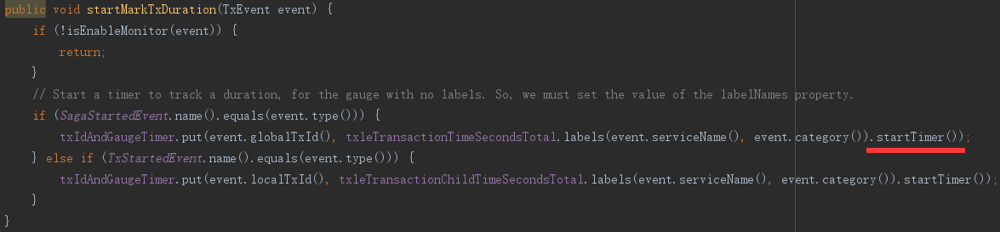

监控与告警
简介
监控主要对系统中的一些重要指标进行采集，采集后可友好地展示在UI中，便于后续对系统的性能、吞吐、稳定性等整体分析。
告警是依据采集的指标配合相关公式设计的告警规则，可及时地发现系统以及服务器存在的问题，避免时间长未处理而酿成重大后果。
除本系统重要指标外，也包括JVM、CPU、内存、磁盘和网络等。
txle监控指标
TXLE项目
全局事务数量
成功数量 - txle_transaction_total
失败数量 - txle_transaction_failed_total
回滚数量 - txle_transaction_rollbacked_total
超时数量 - txle_transaction_timeout_total
重试数量 - txle_transaction_retried_total
暂停数量 - txle_transaction_paused_total
继续数量 - txle_transaction_continued_total
自动继续数量 - txle_transaction_autocontinued_total
采用Prometheus的Counter类型统计，部分代码如下：


子事务数量
指标名称：txle_transaction_child_total
采用Prometheus的Counter类型统计，部分代码如下：

全局事务时长
指标名称：txle_transaction_time_seconds_total


子事务时长
指标名称：txle_transaction_child_time_seconds_total
同全局事务时长，将globalTxId改为localTxId。
业务SQL时长与数量
指标名称：txle_sql_time_seconds_total、txle_sql_total
即业务应用系统执行的SQL。
标准业务SQL统计时已依据业务和事务类别分组。
未分组的业务SQL主要包含：自动补偿SQL。
注：当某子业务被成功回滚时，对应的txle_sql_total会有7条，即针对当前子事务会有如下操作“开启事务、结束事务、查询回滚状态、新增待完成的回滚命令、新增回滚事件、更新回滚命令为完成、更新全局事务结束事件”。
维护SQL时长与数量
指标名称：txle_sql_time_seconds_total、txle_sql_total
即TXLE项目执行的SQL，含Client端自动补偿相关维护SQL和Server端的维护(或所有)SQL。
标准维护SQL统计时已依据业务和事务类别分组。
未分组的维护SQL主要包含：Client端自动补偿SQL、Server端部分定时器SQL(无全局事务标识参数的)、超时和补偿事件SQL。
JVM
采用prometheus自带统计方式：
io.prometheus.client.hotspot.DefaultExports.initialize();
CPU、内存、磁盘、网络
安装第三方工具Node exporter来统计指标。
TXLE默认Prometheus客户端服务端口
TXLE Server端默认Prometheus端口8099
默认端口逻辑：默认端口配置在application.yaml文件中，所以程序中获取到的任何值均可认为是维护人员主动编辑，所以在程序层面如果获取到无效值，则意味着不启动Prometheus客户端监控服务。
application.yml
txle:
prometheus:
metrics:
port: 8099
TXLE Client端默认Prometheus端口8098
默认端口逻辑：Client与Server不一样，Client端的默认端口只能写在Java代码中。因为Client端的Prometheus服务端口需由集成业务进行设置，所以无法在Client端进行默认配置。
application.yml
txle:
prometheus:
metrics:
port: 8098
application.properties
txle.prometheus.metrics.port=8098